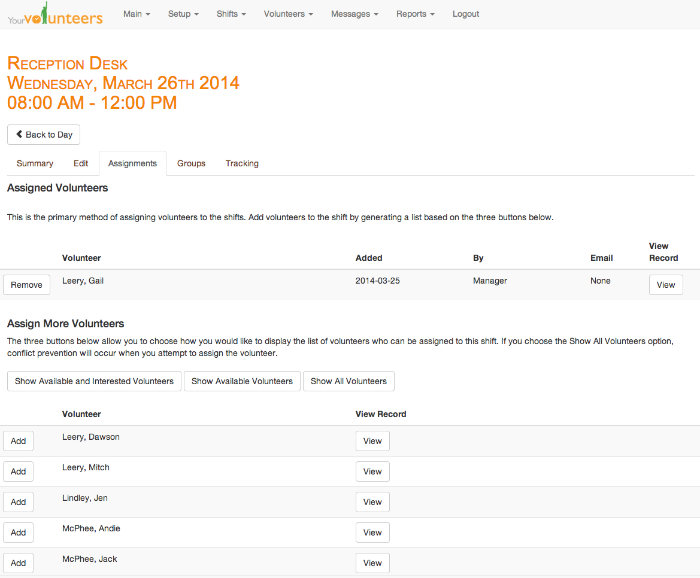

Scheduling Volunteers
This brief video below shows the different ways that shifts can be assigned to volunteers.
Click on the HD icon in the bottom right corner for the 1080p version of the video. The
examples in this video used the Safari browser on a Mac.

Create a Volunteer Focus for Your Organization
In the past, we had separate account types for special events and ongoing volunteer needs. We have now combined the best features of each into what we call a volunteer focus. You can create an unlimited number for your organization. For example, you can create a focus called, "Administration" that includes office work and then another one for a fundraising dinner.Creating Shifts
You as a volunteer manager starts by creating shift types. Then, you quickly create specific instances of the shifts and set how many volunteers you need for the shift and the times that you need them.Availability Time Blocks
Remember on those paper forms that you had where you asked volunteers what times they are available? You can optionally include those in our system as well. This lets your volunteers communicate to you when they are available to volunteer at your organization.Assigning Volunteers
You as the volunteer manager is able to generate a list of volunteers who have indicated availability and interest in the shift, a list of volunteers who have indicated availability, or you can select from a list of all volunteers. (cool new feature, huh?). We do our best to prevent scheduling conflicts.Volunteers Choosing their Own Shifts
Volunteers can login to the site and see a list of all of the shifts available. They see if they have a scheduling conflict with the shift and, as long as you haven't locked the volunteer focus or as long as you haven't limited to shift by groups (see below and see below), then they are able to add the shift to their schedules.Locking the Volunteer Focus
Because some volunteer managers would prefer to be the ones scheduling shifts, you have the option to "lock" the volunteer focus so that only the volunteer managers can change the volunteer schedules. Volunteers are still able to indicate to you their availability and their interests.Grouping Volunteers
New to this version of YourVolunteers, you as a volunteer manager may choose to limit shifts by particular groups. You can then add volunteers to those groups. For example, if you have volunteers who work with children, you can choose to create a group called, "Passed Background Check" and then limit those shifts that work with children to members of that group.

Please Wait...